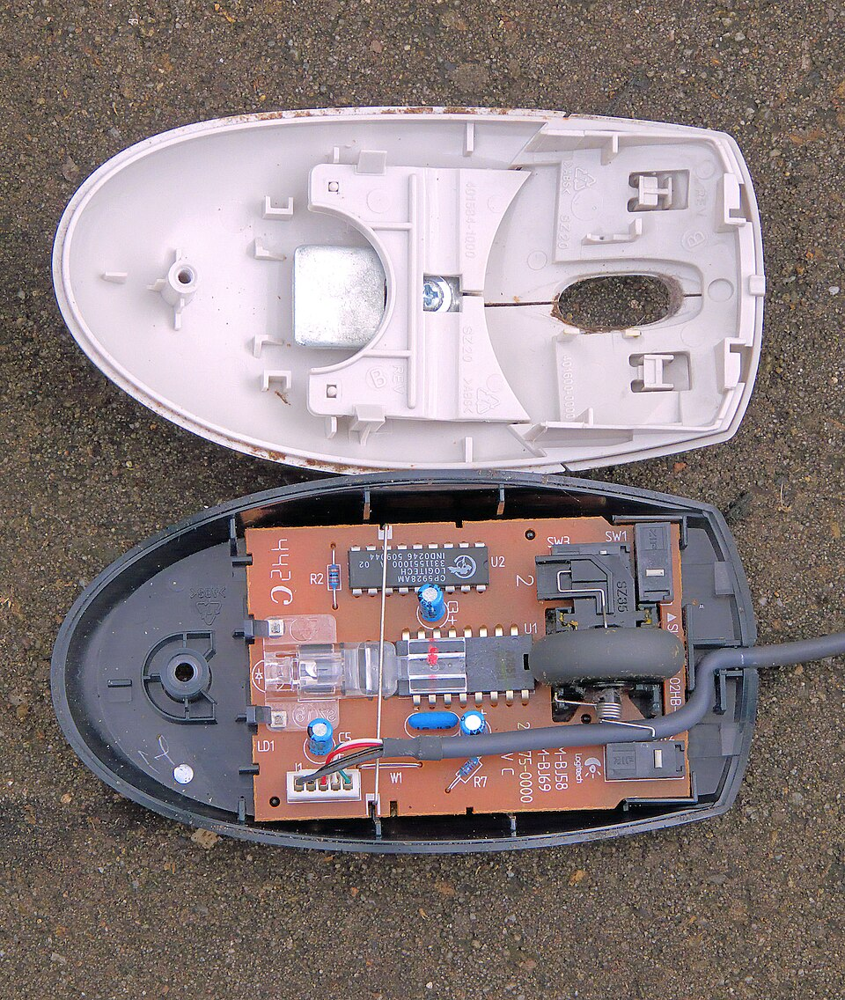

Mouse ou teclado não funciona
O problema
O mouse ou o teclado para de responder: o cursor não se move, as teclas não digitam ou o dispositivo não é reconhecido ao ser conectado.
Possíveis causas
Mau contato na porta USB, pilhas fracas em modelos sem fio, receptor USB (o pequeno adaptador do dispositivo sem fio) desconectado, perda do pareamento Bluetooth, driver travado ou defeito físico no próprio dispositivo.

Solução no Windows
Conecte o dispositivo em outra porta USB, de preferência na parte traseira do gabinete, que fica ligada direto na placa-mãe. Nos modelos sem fio, troque as pilhas e confira o receptor. Nos modelos Bluetooth, remova o dispositivo em Configurações > Bluetooth e dispositivos e faça o pareamento de novo.
Se o dispositivo funciona em outro computador, abra o Gerenciador de Dispositivos (Win + X), expanda Mouse e outros dispositivos apontadores ou Teclados, clique em Desinstalar dispositivo e reinicie. Na seção Controladores USB, um item com ponto de exclamação indica falha na porta. Sem mouse, use Tab, setas e Enter; sem teclado, use o Teclado Virtual em Configurações > Acessibilidade > Teclado.
Solução no Linux
Depois de conectar o dispositivo, o comando lsusb mostra se ele foi reconhecido e
sudo dmesg -w mostra em tempo real as mensagens do kernel ao conectar e desconectar; erros
como "device descriptor read error" indicam problema na porta ou no cabo.
Para dispositivos Bluetooth, use Configurações > Bluetooth ou o comando bluetoothctl
(dentro dele: remove, scan on e pair). Sem teclado, o Ubuntu oferece
o teclado na tela em Configurações > Acessibilidade > Digitação.